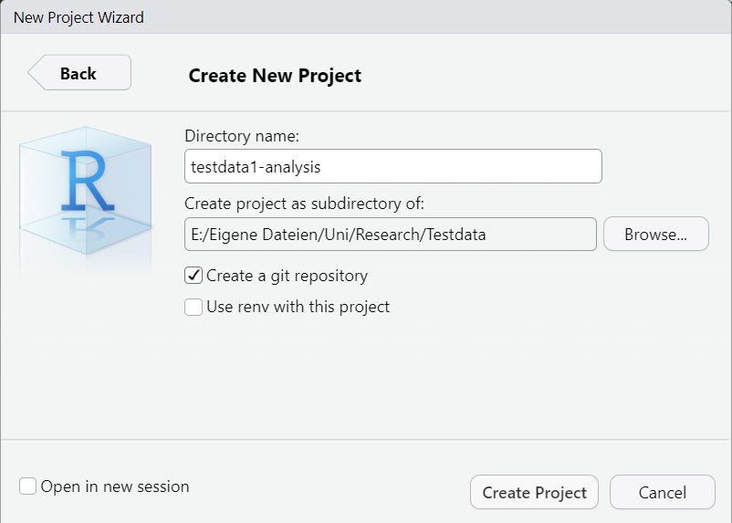
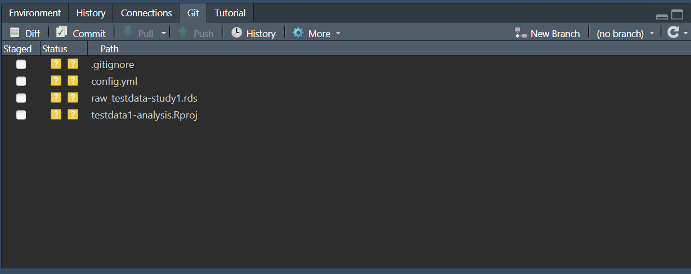
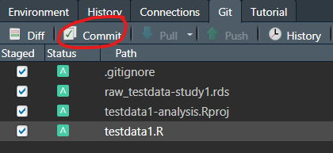
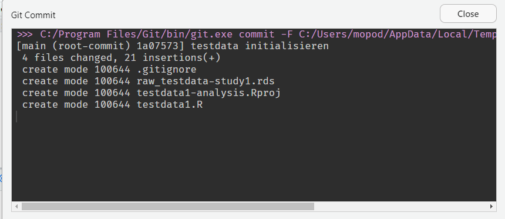
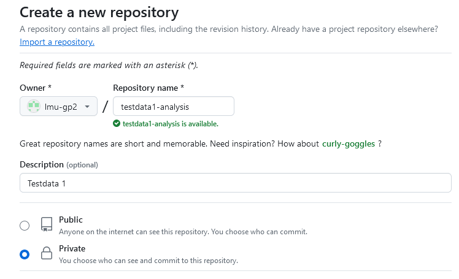
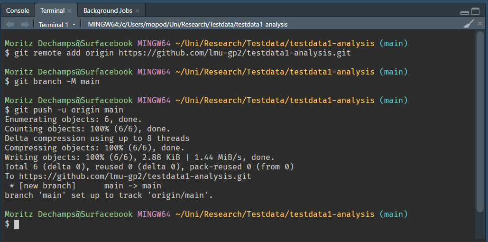
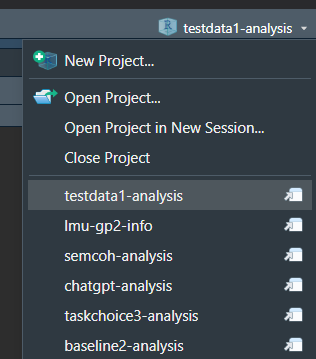

Ein neues Projekt anlegen
Du hast die verfügbaren Repositorien auf Github gecheckt und es gibt noch kein Analyseprojekt für die Daten. In diesem Fall, musst du ein neues Projekt anlegen. Ich stelle Euch 2 Varianten vor.
Variante 1
1. Ein neues RStudio-Projekt anlegen und Git aktivieren
RStudio > New Project > New Directory > New Project
Speicherort und Projektnamen aussuchen und Create a git repository aktivieren.

Ein neuer Ordner mit dem Projektnamen wird erstellt und enthält die projektname.Rproj und .gitignore-Dateien.
2. Daten herunterladen und analysieren
Erstelle ein neues R-Skript unter File > New File > R script und lade die Rohdaten vom Server und analysiere drauf los.
library(qpsy)
raw <- loadexp("testdata/study1")
str(raw)Speicher das R-Skript, z.B. als testdata1.R
3. Beginne mit der Versionierung via Git
Öffne den Git tab oben rechts: Hier seht ihr, dass es neue, bisher unbekannte (untracked) Dateien gibt. Wir wollen die Versionierung für alle Dateien außer der config.yml aktivieren, da hier das Passwort für den Server gespeichert ist.

Wir können die config.yml igorieren (untracked lassen), oder Git mitteilen, dass sie ignoriert werden und gar nicht mehr in der Liste auftauchen soll. Dazu öffnen wir die .gitignore-Datei unter Files und ergänzen den Dateinamen.
.Rproj.user
.Rhistory
.RData
.Ruserdata
config.ymlNachdem wir gespeichert haben, verschwindet die config.yml in der Git-Übersicht.
Klicke jetzt das Kästchen aller Dateien an, die getrackt werden sollen (in der Regel alle) und klicke auf Commit.

Das nächste Fenster zeigt dir den Fortschritt. Sobald alles fertig ist, kannst du es schließen und bist fertig!

4. Das lokale Repo mit Github synchronisieren
Gehe in deinem Browser auf Github, logg dich ein und wähle Repositories im Menü. Klicke jetzt auf den grünen Button New.
Wähle als Owner lmu-gp2 und als Repository name [experiment]-analysis, also z.B. testdata1-analysis. Gib eine Description ein, wenn du möchtest, z.B. Testdata 1 und stelle das Repo zunächst auf Private. Klicke anschließend auf Create repository.

…or push an existing repository from the command line
git remote add origin https://github.com/lmu-gp2/testdata1-analysis.git
git branch -M main
git push -u origin mainKopiere diesen Code mit Symbol, gehe in dein RStudio-Projekt und füge ihn unten im Terminal (nicht der Konsole) ein und bestätige mit Enter.

Wenn du die Github-Setie neu lädst, sind die Dateien jetzt vorhanden und können laufend synchronisiert werden.
Variante 2
Automatisiere diese Schritte indem du die addrepo.R abspeicherst und ausführst.
Speichere die Datei an einen bekannten Ort, am besten den übergeordneten Ordner der Analyseprojekte.
Öffne Sie und gib Deine Github-Zugangsdaten für email, name und token ein.
2. Erstelle ein klassisches R-Projekt
So wie man es kennt, ob Git bereits aktiviert ist oder nicht, spielt keine Rolle, da es nachaktiviert wird.
3. Lade das Skript in Deinem R-Projekt
Öffne das R-Projekt, in dem du ein Git-Repositorium initialisieren und mit Github synchronisieren willst und führe das Skript aus (z.B. in der Console). Wenn die Datei zum Beispiel im übergeordneten Ordner liegt mit:
source("../addrepo.R")4. Gib die gefragten Details ein und bestätige
Repository name: z.B. testdata1-analysis
Repository description: z.B. Testdata 1
5. Lade das Projekt neu
Lade das Projekt neu, indem du oben rechts auf den Projektnamen klickst und das Projekt erneut öffnest. Anschließend wird der Git-Tab angezeigt. Du bist jetzt synchronsiert.
